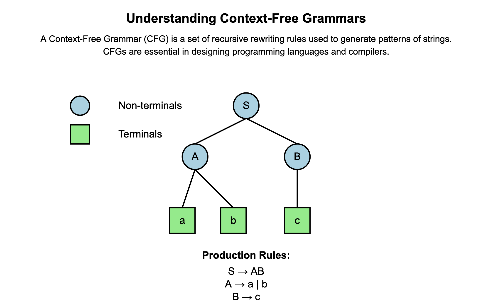

Welcome
CFGs
Understanding Context-Free Grammars
A Context-Free Grammar (CFG) is a set of recursive rewriting rules used to generate patterns of strings. CFGs are essential in designing programming languages and compilers.

(Visual: A diagram showing how non-terminals expand into terminals using production rules.)
Key Concepts:
- Non-Terminals (NT): Symbols that can be expanded into other symbols (e.g.,
S, A, B).
- Terminals (T): Basic symbols that cannot be expanded further (e.g.,
a, b, +, *).
- Production Rules: Define how non-terminals can be replaced with terminals and other non-terminals.
Memory Aids
- NT and T: Think of Non-Terminals as "Not There Yet" and Terminals as "There" — NTs need further expansion, Ts are final.
- CFG Structure: Remember "Start Small, Grow Big" — starting from a small symbol, we expand to generate larger strings.
Why CFGs Are Powerful
CFGs can describe complex patterns that regular expressions cannot, such as:
- Palindromes: Strings that read the same forwards and backwards.
- Nested Structures: Balanced parentheses, nested loops, etc.
- Matched Quantities: Patterns like \( a^n b^n \), where the number of
a's matches the number of b's.

(Visual: A parse tree demonstrating the generation of a palindrome.)
Parse Trees and Ambiguity
Parse Trees: Visual representations showing how a string is derived from the grammar.

(Visual: A tree structure showing derivations from the start symbol to terminals.)
Ambiguous Grammars: Grammars where a single string can have multiple parse trees.
Handling Ambiguity:
- Eliminate Left Recursion: Modify rules to remove immediate left recursion.
- Factor the Grammar: Rewrite rules to reduce ambiguity.
- Introduce Precedence: Define operator precedence to resolve ambiguities in expressions.
Quick Recap
- CFGs help define the syntax of languages.
- Non-Terminals can be expanded; Terminals cannot.
- Ambiguity can be resolved by refining grammar rules.
Lexing, Parsing, and Interpreters
The Three Pillars
- Lexing: Breaking code into tokens.
- Parsing: Building an Abstract Syntax Tree (AST) from tokens.
- Interpreting: Executing the code represented by the AST.

(Visual: A flowchart showing the process from source code to execution.)
Lexing
Purpose: Convert source code into a sequence of tokens.
Tokens: Basic elements like keywords, identifiers, literals, and operators.
Memory Aid
"Let’s Eat Xylophones": Lexing Extracts Tokens.
Parsing
Purpose: Analyze tokens to form an AST according to grammatical rules.
Types of Parsers:
- LL(1) Parser: Left-to-right scanning with 1-token lookahead.

(Visual: An AST for a simple arithmetic expression.)
Memory Aid
"Parsing Assembles Syntax Trees".
Interpreting
Purpose: Traverse the AST to perform computations.
Error Handling: Semantic errors are caught during interpretation.
Memory Aid
"Interpreters Execute Trees".
Quick Recap
- Lexing transforms code into tokens.
- Parsing organizes tokens into an AST.
- Interpreting executes the AST.
Operational Semantics
Giving Meaning to Programs
Operational semantics define how the execution of programs proceeds in a step-by-step manner.

(Visual: Diagram showing the evaluation steps of an expression.)
Types of Semantics:
- Denotational: Mathematical functions represent program meaning.
- Axiomatic: Uses logical assertions.
- Operational: Describes the behavior in terms of state changes.
Key Concepts
- Configurations: Pairs of expressions and environments.
- Evaluation Rules: Define how expressions reduce.
Memory Aid
"Operations Step-by-Step".
Example Evaluation
Evaluate let x = 2 in x + 3.
- Environment:
{ x → 2 }
- Expression:
x + 3
- Evaluation:
2 + 3 = 5

(Visual: Step-by-step evaluation showing the environment and expression at each step.)
Quick Recap
- Operational semantics provide a detailed execution model.
- Environments map variables to values.
- Evaluation follows defined rules.
Property-Based Testing
Testing Properties Over Inputs
Property-based testing verifies that code behaves correctly across a wide range of inputs.

(Visual: Diagram showing the process of generating inputs and testing properties.)
Core Idea:
- Define General Properties: Universal truths about your functions.
- Automated Testing: Use tools to generate random test cases.
Memory Aid
"Properties Over Random Inputs".
Classic Example
Reversing a List Twice Returns the Original List
let prop_reverse l = List.rev (List.rev l) = l
Using QCheck in OCaml
- Define a Generator:
let gen_int_list = QCheck.(list small_int)
- Create a Test:
let test_reverse =
QCheck.Test.make
~name:"Reverse of reverse is original"
gen_int_list
prop_reverse
- Run the Test:
QCheck_runner.run_tests [test_reverse]

(Visual: Flowchart of the QCheck testing process.)
Quick Recap
- Property-based testing checks general properties, not specific cases.
- Generators create diverse inputs.
- Helps find edge cases that traditional tests might miss.
Type Checking, Type Inference, and Static Analysis
Ensuring Code Correctness
These techniques analyze code to prevent errors before execution.

(Visual: Diagram showing the flow of type checking and inference.)
Key Concepts
- Type Checking: Verifies that operations are used with compatible types.
- Type Inference: Deduces types of expressions automatically.
- Static Analysis: Examines code for errors without running it.
Memory Aids
- Type Checking: "Check Types Correctly".
- Type Inference: "Infer Types Instantly".
- Static Analysis: "Scan All Code".
Example
Invalid Operation: 3 + "hello"
- Type of
3: int
- Type of
"hello": string
- Error: Cannot add
int and string.

(Visual: Illustration showing the mismatch between types leading to an error.)
Quick Recap
- Types prevent certain classes of errors.
- Type inference simplifies coding by reducing explicit annotations.
- Static analysis tools enhance code reliability.
Helpful Tips for Managing Exam Anxiety
Create a Relaxing Study Environment
- Comfortable Space: Find a quiet, comfortable place to study.
- Minimize Distractions: Turn off notifications and reduce clutter.
- Ambient Music: Listen to calm, instrumental music if it helps.
Study Techniques
- Active Recall: Test yourself on the material.
- Teach Someone Else: Explaining concepts can improve understanding.
- Mind Maps: Create visual diagrams linking concepts.

(Visual: A mind map connecting the topics covered.)
Wellness Tips
- Deep Breathing Exercises: Helps reduce stress.
- Regular Breaks: Use techniques like the Pomodoro Technique.
- Healthy Habits: Maintain good sleep, nutrition, and hydration.
Positive Affirmations
- **Believe in Yourself**: Remind yourself of your capabilities.
- **Progress Over Perfection**: Focus on learning, not just grades.
- **You're Not Alone**: Many students experience the same feelings.
---
## Final Thoughts
Remember, complex topics become manageable when broken down into smaller parts. Use the memory aids and visuals provided to reinforce your understanding. Be patient with yourself, and know that every effort you make is a step toward success.
You've got this! Keep pushing forward, and don't hesitate to revisit any section as needed.
---
## HTML Code
Below is the HTML code for the content above. You can copy and paste it into an HTML file to view it in your browser.
```html
Calming Study Space